PRPClinic
+7 (812) 920-14-28
ул. Ораниенбаумская, д. 27

Чкаловская
Санкт-Петербурга
Что такое PRP?
PRP - плазма крови с высоким содержанием тромбоцитов (более 1 млн. клеток на 1 мкл.), что более чем в 5 раз превышает среднее значение аналогичного показателя цельной крови!
Немного о PRP-терапии
PRP – инвазивный метод использования собственных клеток организма, обладающих высокой регенеративной активностью. Посредством введения концентрированных тромбоцитов происходят процессы интенсивного восстановления.